驱动人生木马分析
[TOC]
样本概况
1 | |
查壳
首先使用PEiD和ExeInfo工具对样本进行查壳 以下是查壳结果
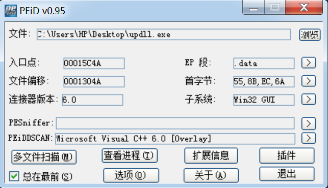结论：病毒使用VC6编写的 无壳
基础分析
基础静态分析
查看字符串
首先在IDA中查看程序的字符串信息 看看能否得出某些信息
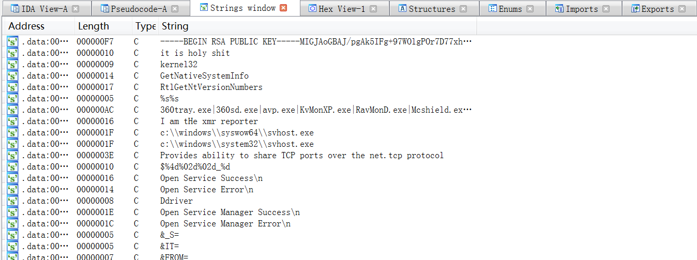在IDA中看到字符串中含有AV检测、系统进程svhost.exe、矿机信息I am tHe xmr reporter等。但具体的还需要再进一步确认。
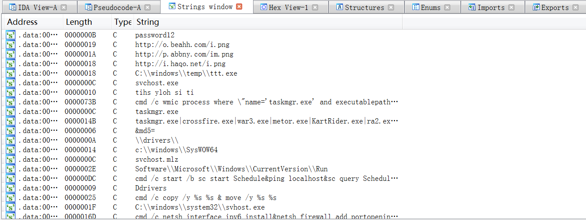紧接着看到了http链接，有可能是病毒的通联地址。然后就是大量CMD命令，大概是在执行某些恶意操作 。
字符串的部分目前提取的信息就这么多，主要还是结合进一步的代码分析。
使用PEiD识别加密算法
使用PEID的Kyrpto ANALyzer插件扫描病毒程序，来识别加密算法。扫描结果如图所示
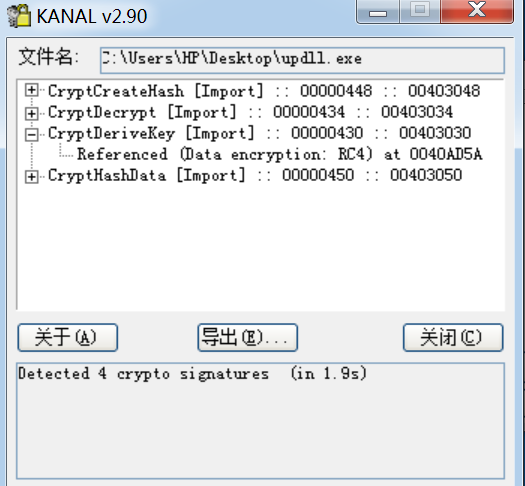由上图可知，该病毒使用RC4加密算法。
查看导入表
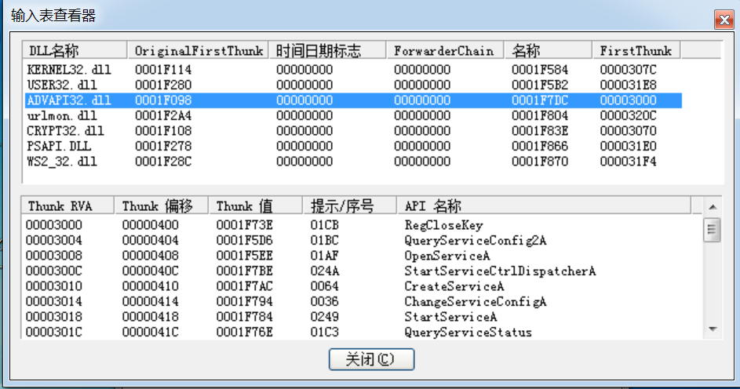输入表存在ADVAPI32.dll中的注册表和windows服务API，说明有可能该病毒存在创建、操作注册表和windows服务的行为。存在urlmon.dll的URLOpenBlockingStreamA API，有可能从网上URL下载数据（有可能是上面字符串提取的URL）。存在WS2_32.dll Windows Sockets应用程序接口， 用于支持Internet和网络应用程序。
此处需要留意
查看资源段
接着查看病毒的资源段
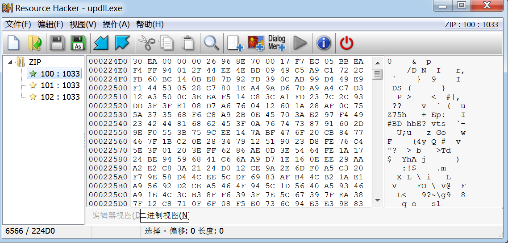存在100号、101号、102号三个资源，从资源头看不出是什么文件， 猜测有可能经过加密。
基础动态分析
查看进程树
首先使用ProcessMonitor查看一下进程树。
注册表监控
使用regshot对运行病毒前后做一个快照进行比对，直接查看结果。
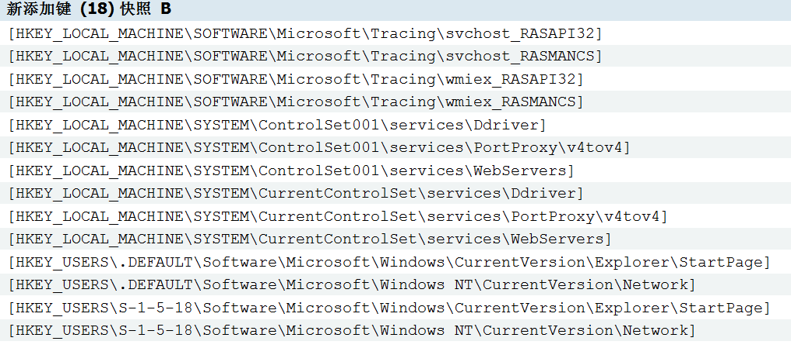文件监控
接下来是文件的监控
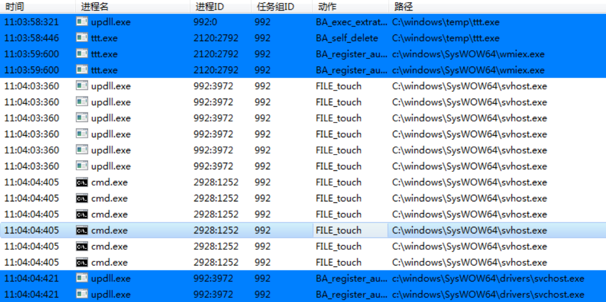网络监控
请求恶意DNS域名
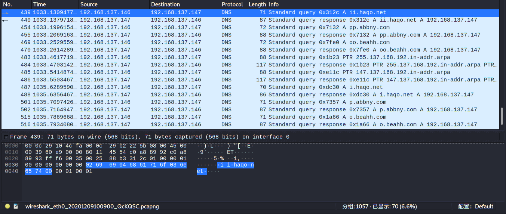上传主机信息，并获取加密数据。
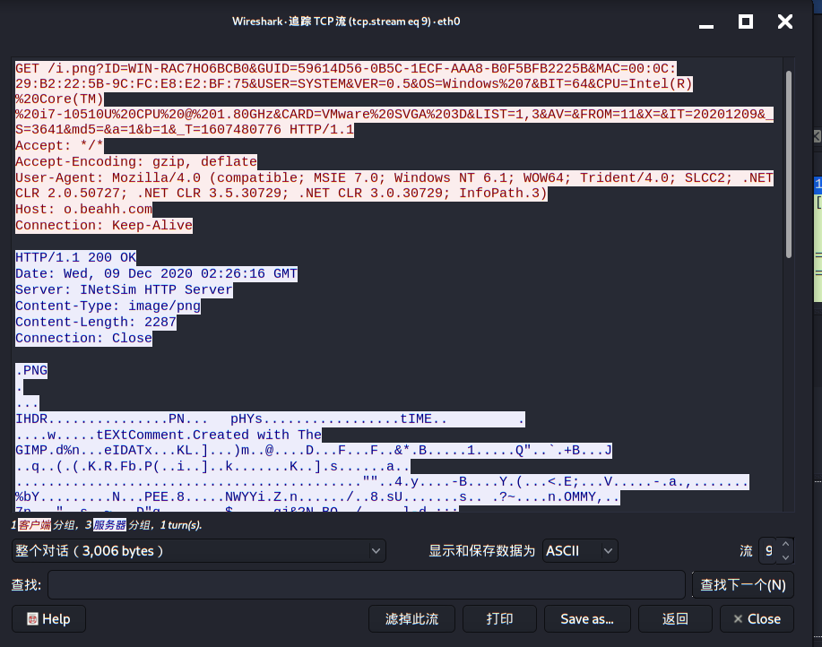服务监控
创建了两个服务：Ddriver和WebServers。
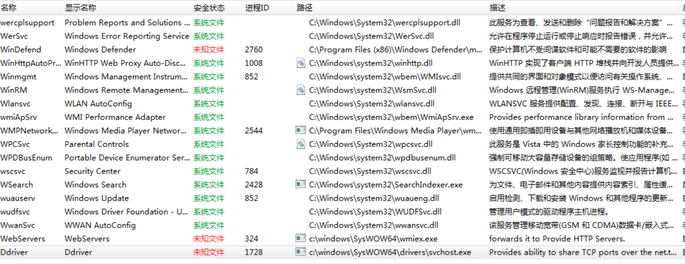使用IDA进行详细分析
主程序启动后首先尝试启动名为Ddriver的服务进程，如果主机已经被感染则直接执行服务函数进行挖矿等恶意行为，如果主机是初次被感染则执行感染配置行为。
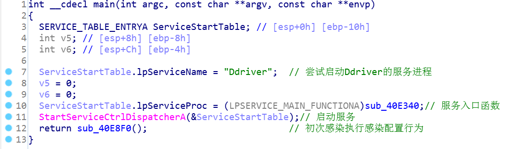第一步检查自身名称是否为svhost.exe或者svchost.exe，如果程序名称不为svhost.exe或者svchost.exe则从资源节中解密释放PE文件（102号资源），释放文件的hash：a4b7940b3d6b03269194f728610784d6，最终在磁盘中释放路径为C:\windows\temp\ttt.exe，释放完成后便执行该文件。
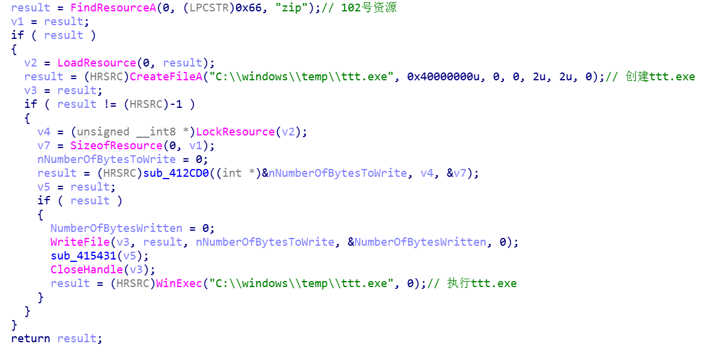释放执行ttt.exe文件后便多次使用cmd命令清理系统原来感染的老版本的挖矿程序，为新版挖矿程序的安装和运行清理环境。结束删除老版的挖矿程序见下图。
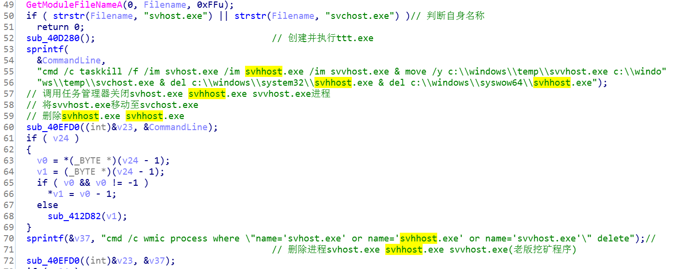设置Windows防火墙开启65531，65532，65533端口，在防火墙规则中分别命名为UDP2，UDP，ShareService，同时开启端口转发，将来自65532端口的流量转发到1.1.1.1地址的53端口，将来自65531端口的流量转发到1.1.1.1地址的53端口。设置防火墙并设置端口代理见下图。

拷贝主程序到C:\windows\system32\svhost.exe并设置隐藏属性，同时拷贝一份到C:\windows\system32\drivers\svchost.exe，之后设置计划任务同时设置注册表项，实现程序的开机启动和定期触发执行。拷贝主程序文件到系统关键目录下、设置计划任务和注册表项见下图。
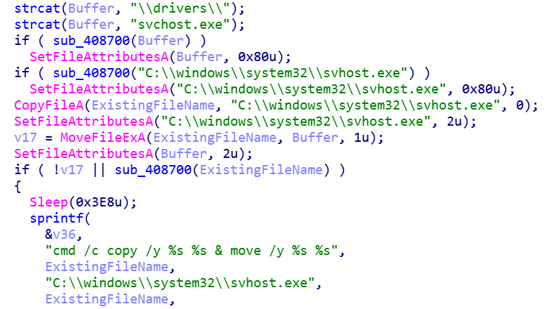 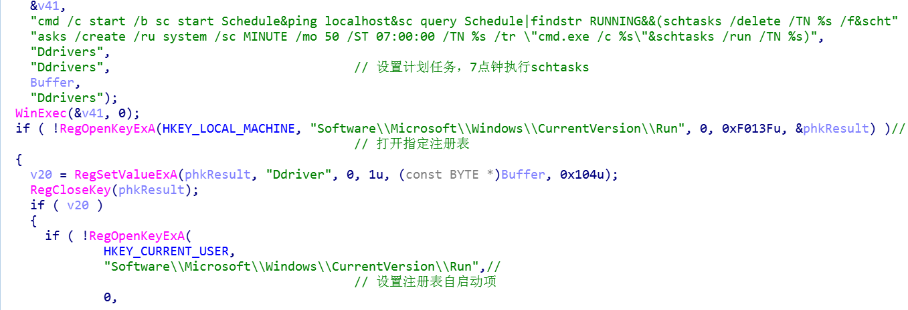完成上述配置后尝试使用CreateServiceA函数将C:\windows\system32\drivers\svchost.exe注册为服务，如果服务存在则修改服务配置，如果CreateServiceA函数调用失败则使用CMD方式调用sc create创建服务，最终尝试使用net start和StartServiceA函数的方式启动服务函数。创建Ddriver服务的首选方式，启动创建的Ddriver服务见下图。
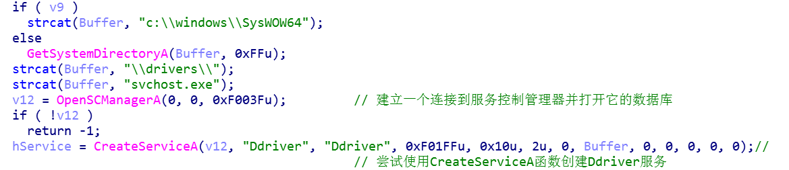 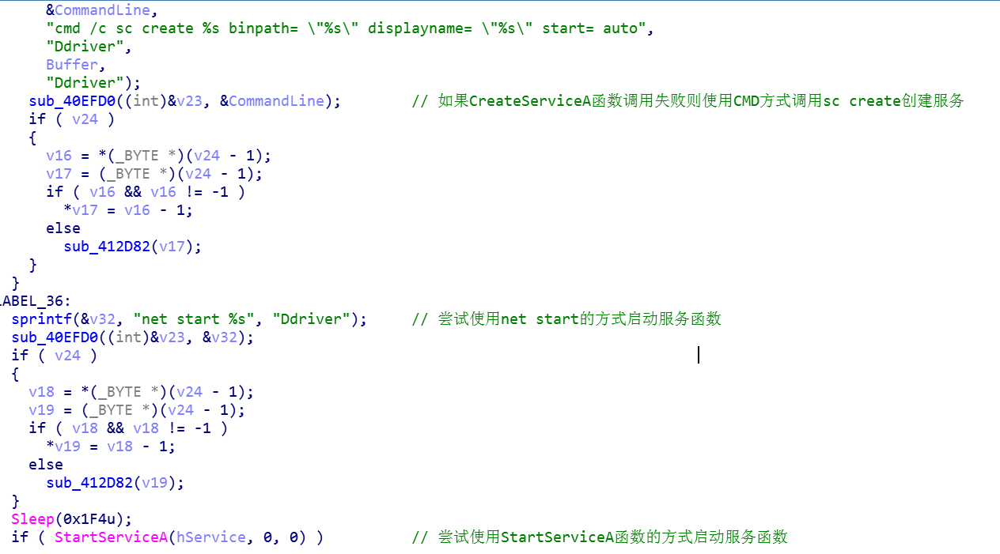服务主函数中首先根据系统位数拼接后续将要使用到的字符串资源，包括从恶意域名临时下载的文件以及解密之后的文件，和后续用来伪装成任务管理器共享进程进行挖矿操作taskmgr.exe。拼接后续需要使用的字符串见下图。
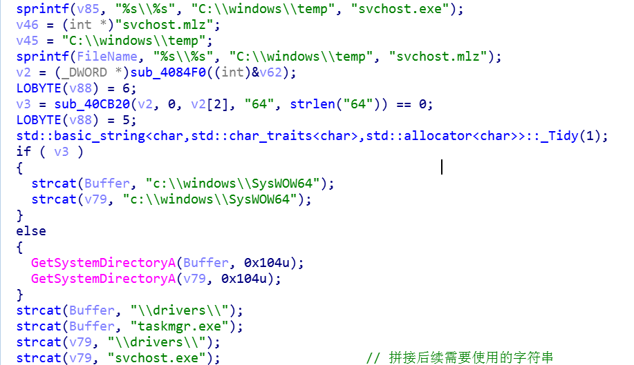创建名为“it is holy shit”的互斥体防止进程重复启动运行，根据系统位数解密释放对应的资源文件，64位系统解密释放100号资源，32位系统解密释放标号为101号资源，释放路径为C:\Windows\system32\drivers\taskmgr.exe(64位系统：C:\Windows\SysWOW64\drivers\taskmgr.exe)。利用互斥体防止进程重复启动，根据系统位数释放taskmgr.exe文件见下图。
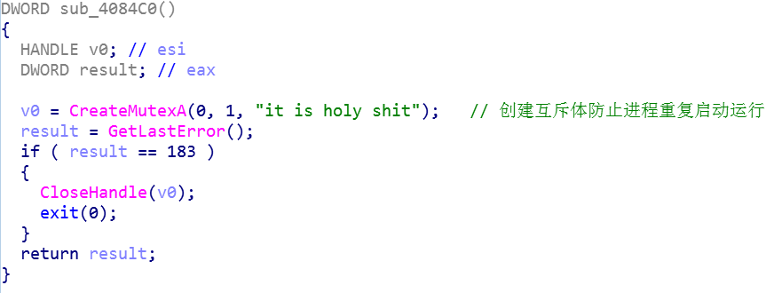 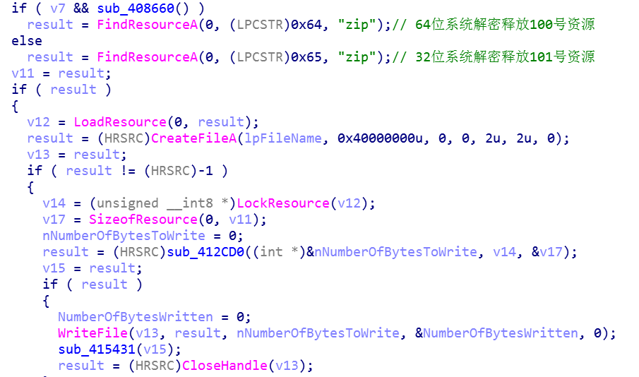之后创建四个线程分别进行相关的恶意操作，第一个线程根据主机中的进程和主机系统相关参数调整挖矿程序的运行状态，当用户打开任务管理器浏览时会自动关闭伪装程序taskmgr.exe，使其不被用户发现；第二个线程每隔10s尝试启动C:\Windows\temp\svchost.exe(永恒之蓝漏洞攻击文件)，实现内网的横向感染传播；第三个线程使用Wmic命令，每10秒对进程进行一次检查，触发时将结束挖矿进程；第四个线程打开监听65533端口。
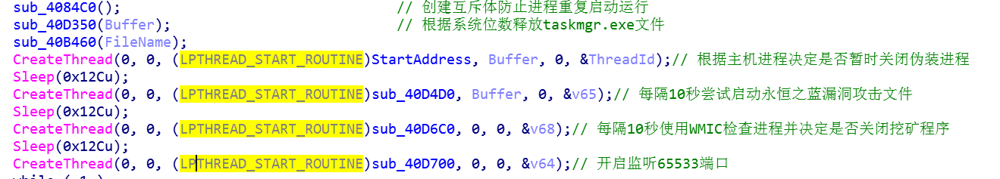收集主机信息并发送到远程服务器，收集的信息包括主机ID，GUID，MAC地址，用户名，系统版本，系统位数，CPU型号，安装的反病毒软件(能够识别的杀软包括:360tray.exe|360sd.exe|avp.exe|KvMonXP.exe|RavMonD.exe|Mcshield.exe|egui.exe|kxetray.exe|knsdtray.exe|TMBMSRV.exe|avcenter.exe|ashDisp.exe|rtvscan.exe|ksafe.exe|QQPCRTP.exe)等等，最终在下载下一步指令的同时将上述信息传输到远程服务器。收集发送到远程服务器的主机信息见下图。
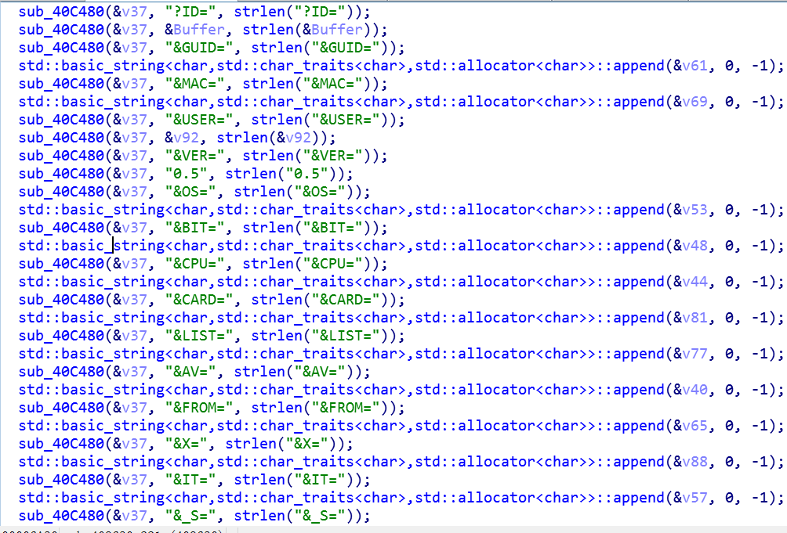之后尝试访问远程服务器中指定的文件内容，从而获取执行指令，在本地解密后解析执行指令，发送的指令通过RC4+RSA算法进行加密，本地获取指令后通过硬编码的RSA公钥进行解密，最终解析执行远程命令。
由接受到的*.png中的指令内容下载指定的文件执行，当前指令的意图是从恶意域名http[:]//dl.haqo.net/下载i.exez资源，该资源为加密状态，下载到本地后解密执行，最终下载解密到C:\windows\temp\svchost.exe，目前下载的程序为永恒之蓝漏洞利用程序，该程序利用445端口实现了病毒的内网横向传播操作，该利用工具中还增加了PASS-THE-HASH的模块，尝试利用内网弱口令进行远程拷贝执行感染操作。下载指定文件解密执行见下图。
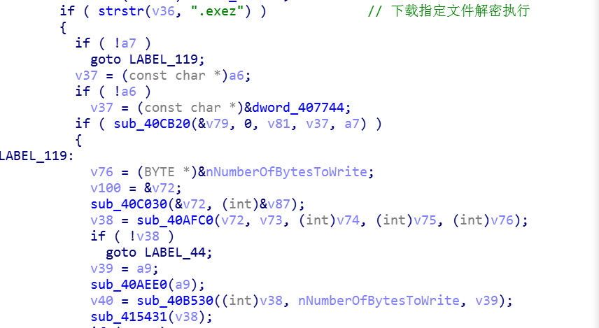释放的ttt.exe文件执行之后会将自身移动到C:\Windows\System32\wmiex.exe(64位系统：C:\Windows\SysWOW64\wmiex.exe)并设置了隐藏属性，将自身写入计划任务，任务名为WebServers，每隔50分钟执行一次C:\Windows\system32\wmiex.exe(64位系统：C:\Windows\SysWOW64\wmiex.exe)，并创建服务WebServers设置为开机自启动。释放的ttt.exe文件被移动到指定路径、释放的ttt.exe（wmiex.exe）文件实现的命令见下图。
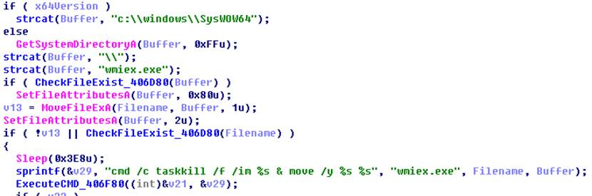 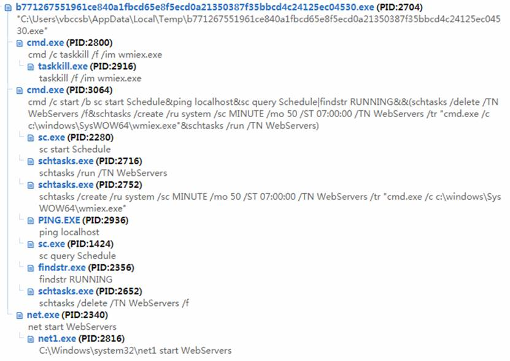WebServers服务启动后会向指定的三个域名发起Get请求将获取的主机相关信息发送到远程服务器（pp.abbny.com、oo.beahh.com和ii.haqo.net），从而收集主机的相关信息，其中包含主机名，标识主机的GUID，主机MAC地址，主机系统和操作系统位数。上传信息所到的恶意域名见下图。
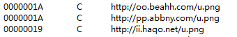WebServers服务同时具备Ddriver服务的联网功能，通过尝试下载指定域名的u.png文件，图片文件中包含了加密的指令内容，攻击者可以通过编辑该文件从而控制感染主机进行任意操作，也可以修改指令改变所下发的指令内容，当前该文件并不存在，因此WebServers不会执行其他恶意行为，仅仅处于等待指令的状态，在每次开机以及开机状态后每隔50分钟检查接收一次远程指令，wmiex.exe中的代码和svchost主程序中网络相关的代码基本一致，RSA公钥也是一样的，因此在这里算是攻击者的一个重复性操作。wmiex.exe和svchost.exe硬编码的公钥信息见下图。
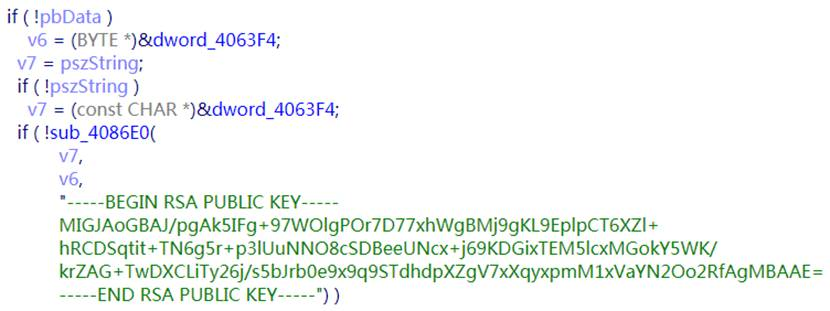对病毒总体行为的总结
经对比分析，该病毒为“驱动人生”木马，通过驱动人生的升级通道下发。该病毒执行后便会将自身移动到系统关键目录并释放多个文件执行，上传主机的相关信息并从指定的恶意域名查询指令，根据黑客指令执行恶意行为。感染范围是安装了受影响的驱动人生程序的Windows系统，和内网中未打MS17-010系统补丁且开启445端口的Windows系统。
| 文件行为： |
|---|
| 下载保存文件到c:\windows\temp\updater.exe，执行后移动到其他位置 |
| 移动文件到c:\windows\system32\svhost.exe，并设置隐藏属性 |
| 拷贝文件到c:\windows\system32\drivers\svchost.exe，并设置隐藏属性 |
| 释放文件到c:\windows\system32\drivers\taskmgr.exe，并设置隐藏属性 |
| 释放文件到c:\windows\system32\wmiex.exe，并设置隐藏属性 |
| 下载文件到c:\windows\temp\svchost，此文件为永恒之蓝漏洞利用工具 |
| 释放文件到c:\windows\temp\m.ps1，此文件为mimikatz密码hash提取工具 |
| 释放文件到c:\windows\temp\mkatz.ini，此文件包含提取本机用户的hash值 |
| 注：在Windows64位系统中c:\windows\system32替换为c\windows\SysWOW64 |
| 注册表行为： |
|---|
| 创建HKLM\SOFTWARE\Microsoft\Windows\CurrentVersion\Run\Ddriver |
| 创建HKLM\SOFTWARE\Microsoft\Windows\CurrentVersion\Run\WebServers |
| 网络行为： |
|---|
| 尝试上传主机信息到http[:]//i.haqo.net |
| 尝试上传主机信息到http[:]//p.abbny.com |
| 尝试上传主机信息到http[:]//o.beahh.com |
| 尝试上传主机信息到http[:]//ii.haqo.net |
| 尝试上传主机信息到http[:]//pp.abbny.com |
| 尝试上传主机信息到http[:]//oo.beahh.com |
| 尝试获取远控指令信息http[:]//i.haqo.net/i.png |
| 尝试获取远控指令信息http[:]//p.abbny.com/im.png |
| 尝试获取远控指令信息http[:]//o.beahh.com/i.png |
| 尝试获取远控指令信息http[:]//ii.haqo.net/u.png |
| 尝试获取远控指令信息http[:]//pp.abbny.com/u.png |
| 尝试获取远控指令信息http[:]//oo.beahh.com/u.png |
解决方案
| 删除计划任务，结束病毒进程并删除服务： |
|---|
| 删除名为Ddrivers、WebServers、DnsScan、\Microsoft\Windows\Bluetooths的计划任务 |
| 删除可能存在的计划任务Certificate和Credentials |
| 结束名为wmiex.exe进程以及描述为“svchost”的svchost进程 |
| 删除名为Ddriver和WebServers的服务项 |
| 删除下载和释放的病毒文件： |
|---|
| c:\Users[Username]\AppData\Roaming\Microsoft\Windows\Start Menu\Programs\Startup\run.bat |
| c:\Users[Username]\AppData\Roaming\Microsoft\cred.ps1 |
| c:\programdata\microsoft\cred.ps1 |
| c:\windows\temp\updater.exe（upinstalled.exe） |
| c:\windows\system32\svhost.exe |
| c:\windows\system32\drivers\svchost.exe |
| c:\windows\system32\drivers\taskmgr.exe |
| c:\windows\system32\wmiex.exe |
| c:\windows\temp\svchost |
| c:\windows\temp\m.ps1 |
| c:\windows\temp\mkatz.ini |
| 注：[Username]替换为当前登录的用户名 |
| 删除病毒创建的注册表项： |
|---|
| HKLM\SOFTWARE\Microsoft\Windows\CurrentVersion\Run\Ddriver |
| HKLM\SOFTWARE\Microsoft\Windows\CurrentVersion\Run\WebServers |
| 删除病毒设置的防火墙栏目： |
|---|
| 删除入站规则名为UDP，开放65532端口的规则 |
| 删除入站规则名为UDP2，开放65531端口的规则 |
| 删除入站规则名为ShareService，开放65533端口的规则 |
| 删除病毒设置的端口转发的设置： | |||||
|---|---|---|---|---|---|
| netsh interface portproxy delete v4tov4 listenport=65531 | |||||
| netsh interface portproxy delete v4tov4 listenport=65532 |
注：通过CMD管理员执行以上命令
参考
https://www.freebuf.com/articles/network/196594.html
https://app.any.run/tasks/14168f29-4921-4dc4-a28b-113e3ed9fbe7/